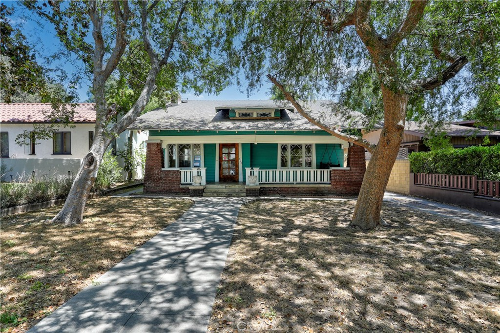
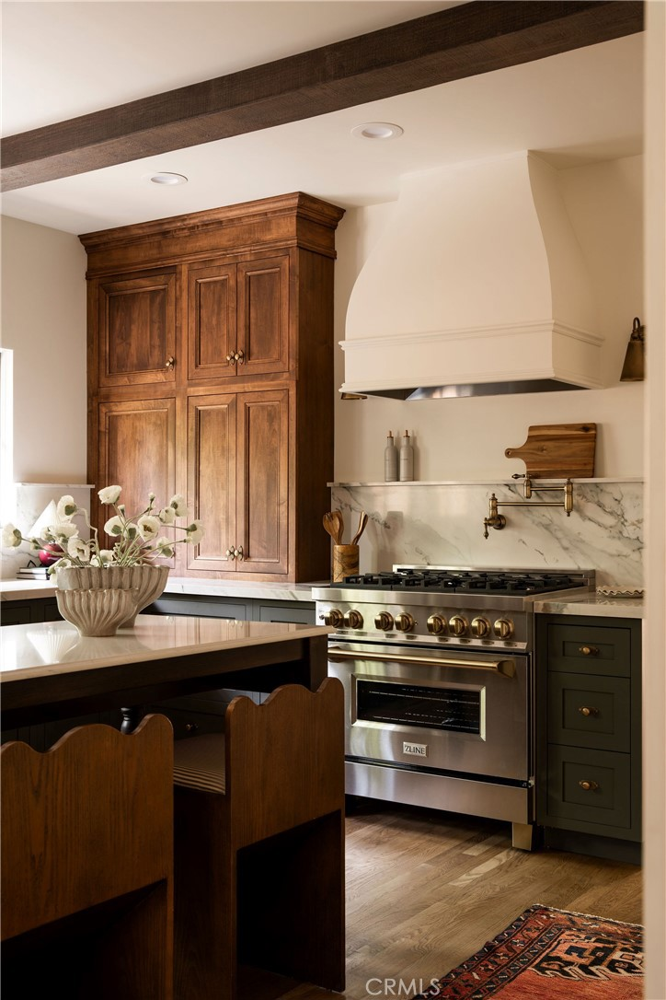
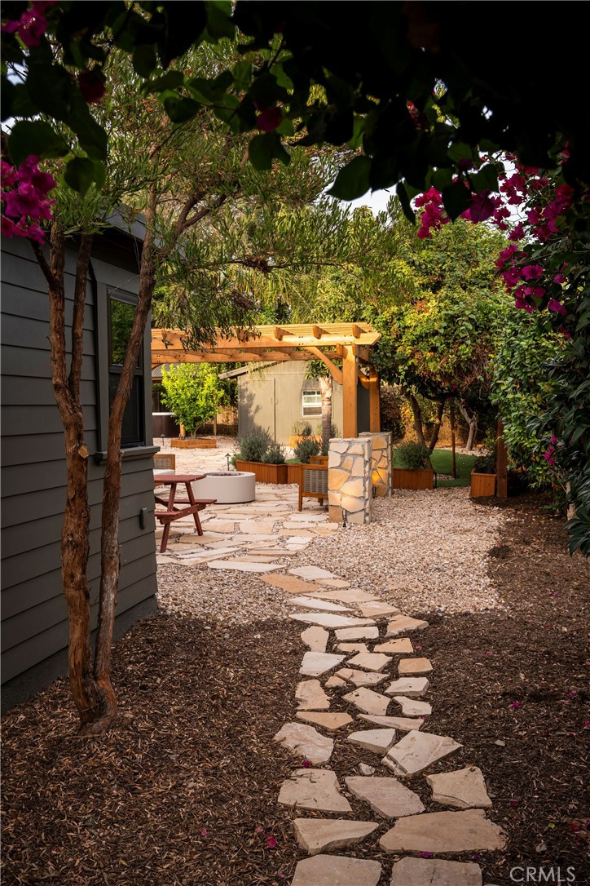
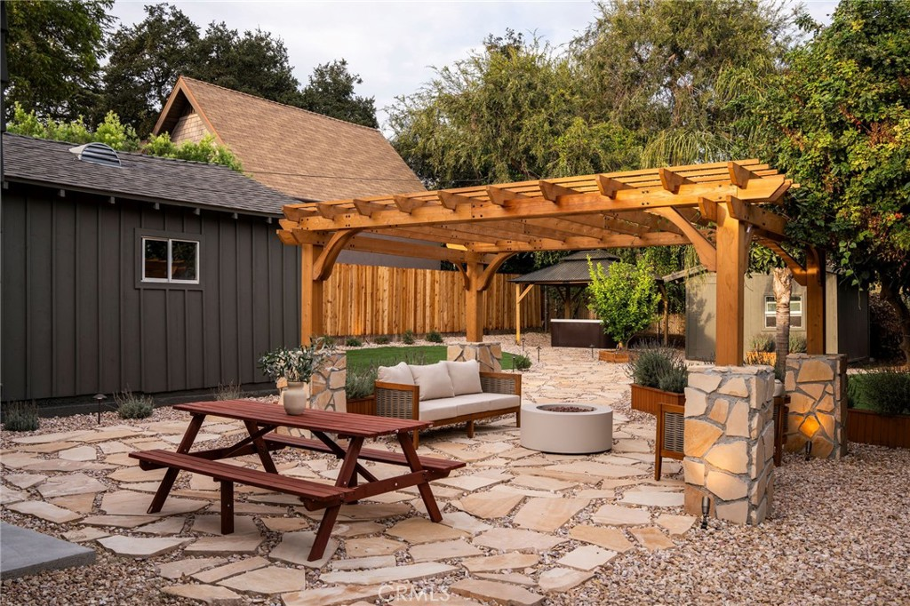

Obsession No. 007Bungalow Heaven · Pasadena
1190 N
Wilson Ave
The layout of this house is almost identical to the first one I ever bought, and that's the kind of detail that gets me every time.
Why it made the edit
“It felt like running into an old friend.”
I bought my first house about ten years ago, an old Craftsman with beams and a fireplace and a big front porch, and that's genuinely where my love of these houses started, so walking through 1190 N Wilson and clocking that the layout is basically the same one I lived in myself felt like running into an old friend.
This one sits in Bungalow Heaven, a National Register historic district in Pasadena, a 1912 Craftsman designed by architect Irvin B. Speicher and just restored top to bottom by Nicole Douglas Designs, and it's the kind of restoration that makes you think about the people who actually built these things by hand, back when a house got its character from mill workers who cared about joinery nobody would ever even notice.
Inside it's white oak floors, a green marble fireplace, solid maple cabinetry paired with exposed beams and antique brass hardware in the kitchen, a mahogany front door, and a clawfoot tub, the kind of detail you only get when someone actually cares about getting it right instead of checking a box.
The backyard is its own whole world, avocado and lemon trees, bougainvillea taking over the fence line, a hot tub and a fire pit for whoever ends up living there.
Everything about it feels like it came from the land instead of a catalog, which is exactly what got me about my first house too.
If Craftsmans do the same thing to you that they do to me, I'd love to show you this one.



Want to see it in person?
Curious about this one?
Let’s talk.
Listed by Jessica Romero, Keller Williams Realty. House of Zonshine does not represent this listing. Property details are from listing information and public sources and should be independently verified.